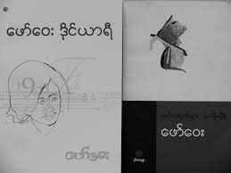

ဖော်ဝေး ဒိုင်ယာရီ

ကဗျာဆရာဖော်ဝေးရဲ့ ဖော်ဝေး ဒိုင်ယာရီ စာအုပ်ကို ပထမအကြိမ်အဖြစ်
နှစ်ကာလများစာပေမှ ၃.၇.၂၀၁၃ မှာ အုပ်ရေ ၅၀၀ ထုတ်ဝေခဲ့ပါတယ်။
မာတိကာ
- ဖော်ဝေးဒိုင်ယာရီ 1957 ၇
- ဖော်ဝေးဒိုင်ယာရီ 1976 ၈၉
- ဖော်ဝေးဒိုင်ယာရီ 1977 ၁၃၃
- ဖော်ဝေးဒိုင်ယာရီ 1978 ၁၄၄
- ဖော်ဝေးရည်းစားစာ ၁၅၀
- ဖော်ဝေးကဗျာ ၁၆၀
- မျက်နှာဖုံးသစ်
- အရိပ်များ
- သန်းခေါင်စျေး